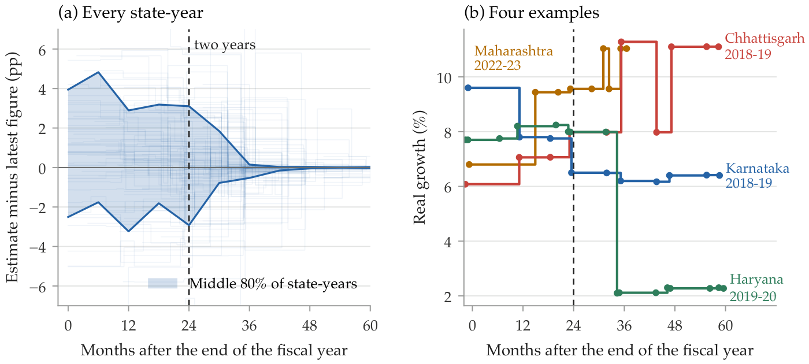
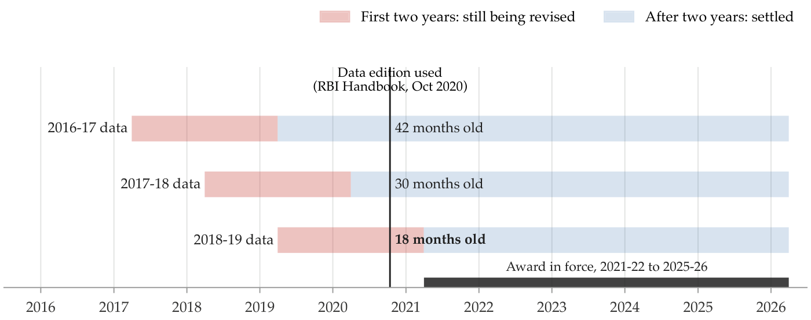
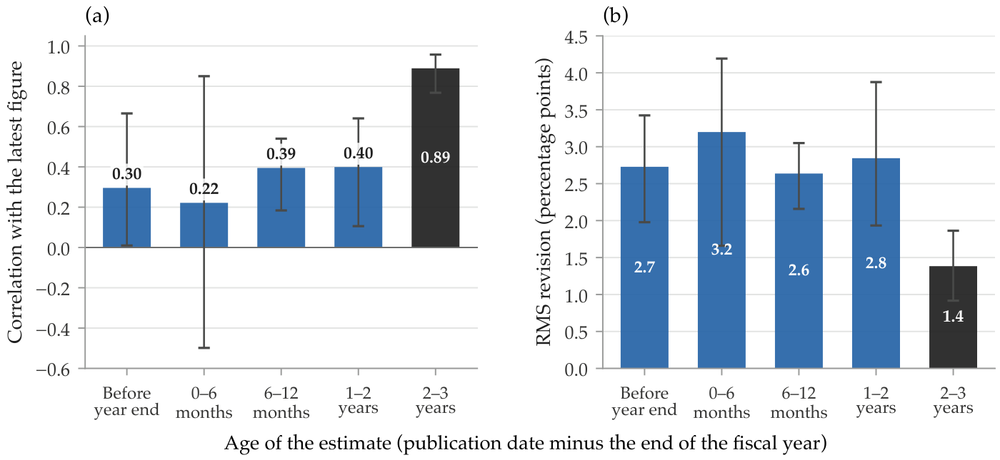
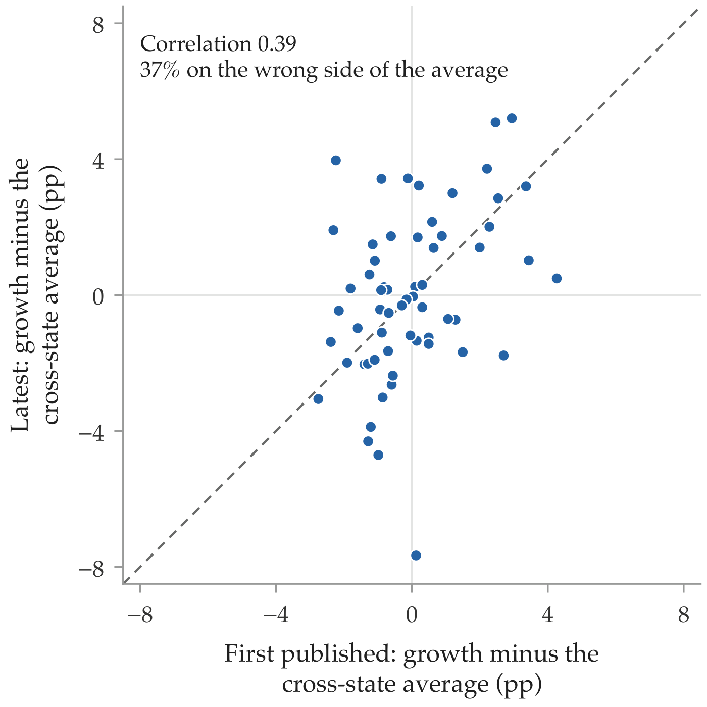
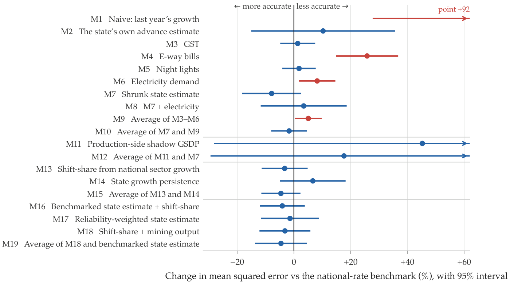
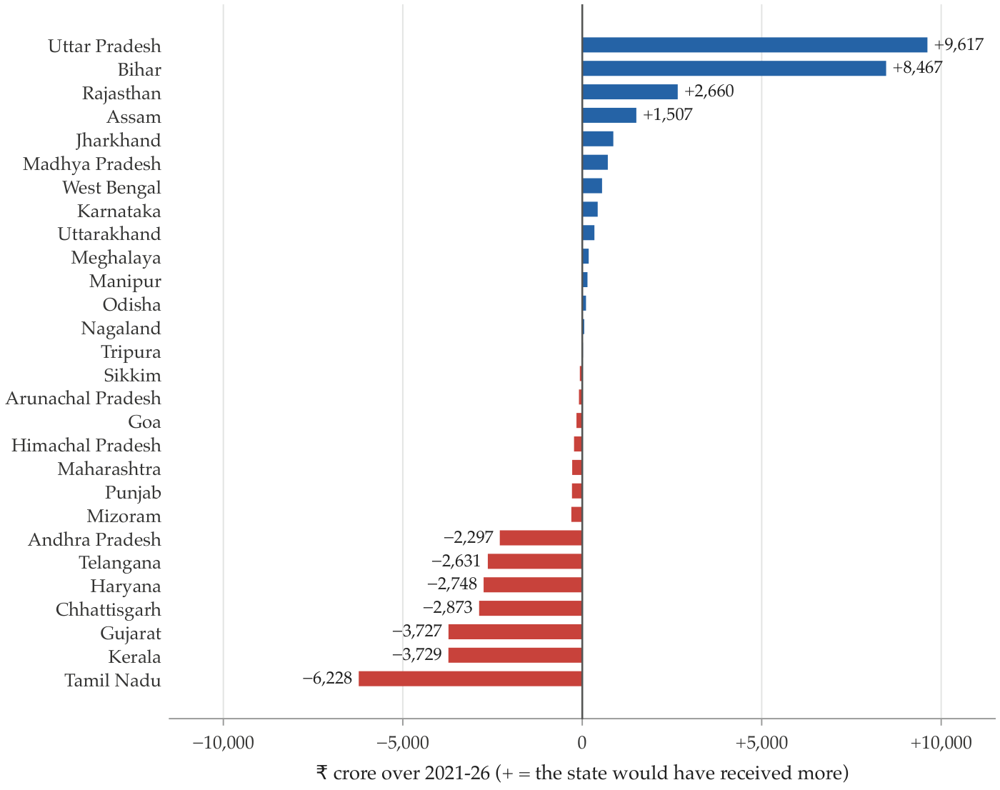
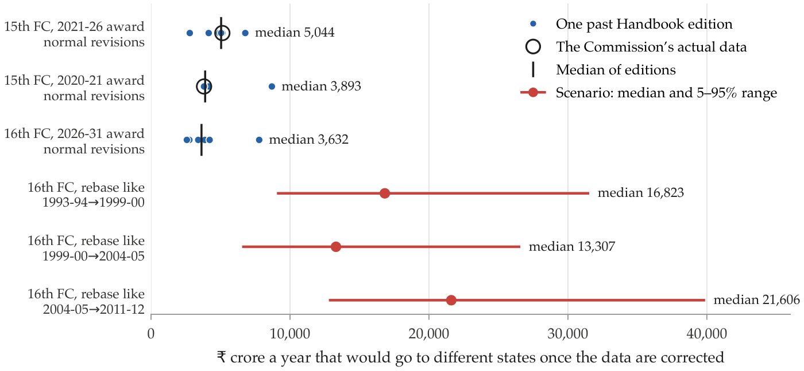
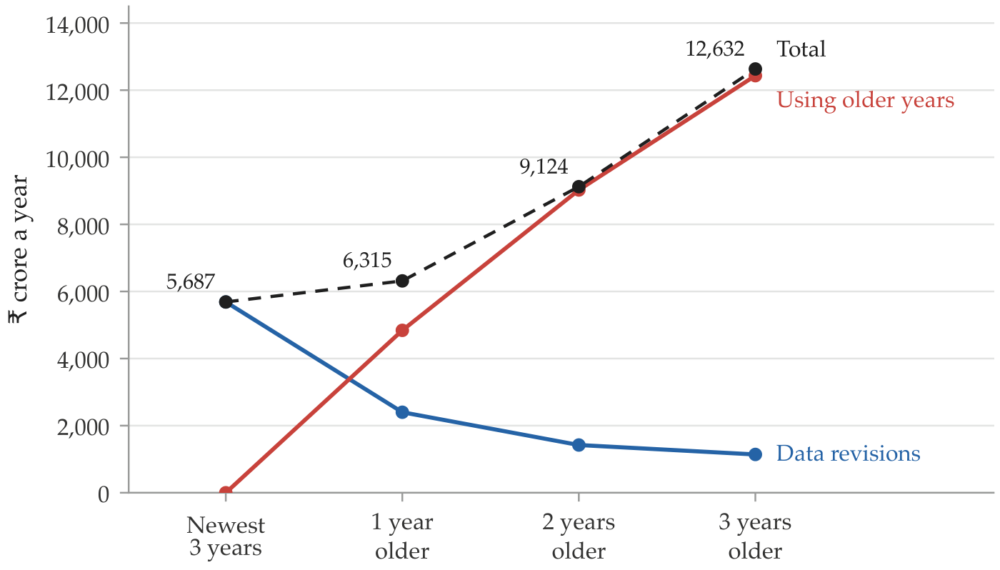

Paper
The Price of Early Data: How State GDP Revisions Would Have Shifted ₹25,654 Crore Between India’s States
Working paper, version 1 · 12 November 2026
Abstract
India uses state GDP to calculate the split of central tax money between states and each state’s borrowing cap. Both of these are set using GDP figures that keep changing for years after they’re first published. This led us to ask how much money has moved between states because the tax split and borrowing limits use GDP figures that have not settled, and what change to the rules would reduce the movement. We built an Indian Time-series of Initial and Historical Accounts of States (ITIHAS), which records published estimates of each state’s GDP with the date it came out: 3,631 figures, 431 published versions, 20 states, 2012-13 to 2025-26. We found the two-year rule where early figures get states’ relative growth wrong for about two years; the correlation between early and final figures is 0.22–0.40 before two years and 0.89 after. The problem cannot be solved by predicting the final numbers early as none of our 19 models designed in advance beat the national rate. The study found that ₹25,654 crore of the 15th Commission’s 2021-26 award would have gone to different states, and that about ₹3,600–5,000 crore a year is normal across past Commissions. Borrowing caps were ₹1.44 lakh crore higher than corrected figures give. We suggest that the fix is not using older data, as the settled data worsens the error, but rather re-running the formula with the corrected figures in year 3 of the award (a “true-up”), which fixes about 44% of the moving money. The same idea works for the borrowing caps.
Figures
















How to cite
If you use the data, cite the database. If you refer to the findings, cite the paper. If you do both, cite both.
The paper
The database
The paper is a working paper for now. If a journal publishes it, the journal reference will replace the one above. The database is deposited on Zenodo under its own DOI, and that citation will not change.